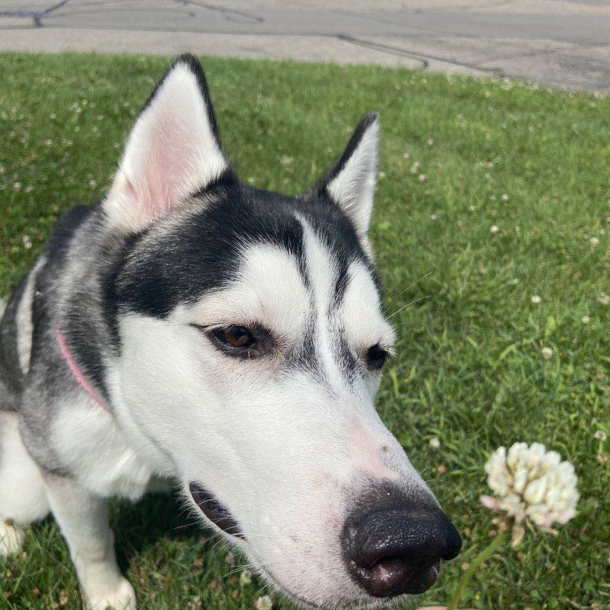
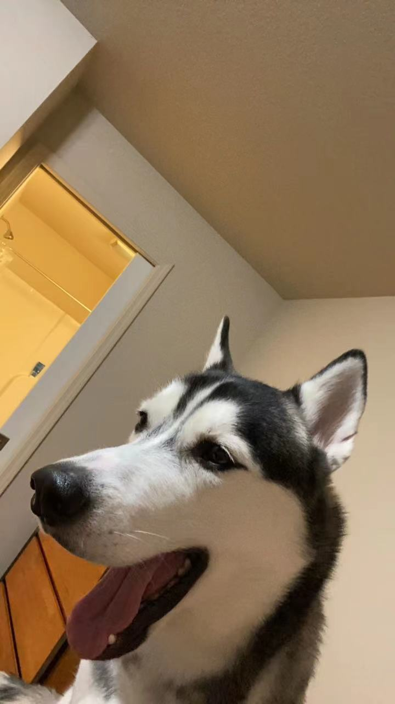

stories about my dog and I

Author: Zihao Liu
posted on: June 5, 2021
It has the same whiteness as snow, mixed with a little gray hair. It is a very cute husky. I used my first salary to buy him because my girlfriend very loves it, so I cherish him so much. I named him Ace. Although he is very cute, he has the disadvantage that he is very naughty and often leaves me and my girlfriend helpless. For example, he used to eat paper towels while my girlfriend and I were busy and did not notice him. his behavior made me furious, but he did not care, because husky always regard themselves as a leader instead of their owner. In the end, I must deal with the trouble he caused. However, he also has a lovely side. Sometimes he is interesting to see him stepping on the sofa and accidentally falling and angry! And every time he takes a bath, he swims in the water. he seems to be very happy. Like ordinary dogs, he is afraid of water. that is different from other dogs. Every time after washing, I ask him to watch TV with me, but he ignores me and keeps rolling around on the bed, enjoying this wonderful time to his heart's content.

Author: Zihao Liu
posted on: June 5, 2021
Husky looks very much like a wolf. I think their hair colors make them look like wolves. The little blue eyes look very dignified, and a pair of sharp little claws stand up like a little boxer by the power of the railing. A bulging belly under the little paw is like a little ball. Under the back, a wagging little tail keeps the balance. It is like a cute elf, serving his master. Husky and I are sharing the same habit that we all love winter. In the North Pole, they function as a kind of transportation for the Eskimos. In my eyes, it is an elf on the snow, running through dense forests and flying over dangerous glaciers, ah! What a happy elf, cute, what do you say? I really want to raise a happy elf, who will stay with me through spring, summer, autumn, and winter. one day we will see a hundred flowers bloom together in spring; we will play in our summer resort in summer and watch the golden leaves falling from trees together in autumn and play in a white world in winter! Before I raise him, I believe I do not have that much energy to play with a dog. However, when this cute baby jump into my life, I realize that we could do everything with each other.